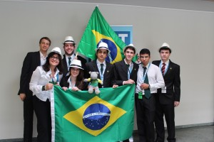

Posts de julho, 2012
Ok, here we go again…
Posted in Sem categoria on julho 26th, 2012 by liara – 1 CommentOlá a todos vocês!
Como vão? 
Hoje teve a premiação, nossa medalha é muito bonita! A de bronze é a configuração do sistema solar no momento da premiação, e todas juntas formam o sistema solar inteiro! \o/
A minha é uma que tem a intersecção das órbitas de Netuno e Plutão, espero que dê sorte. ^^
Tiramos bastante foto, foi bem legal a premiação, depois coloco umas fotos aqui (estou com uma baita preguiça haha)…
De resto, amanhã vamos para Stutgart, vou acordar uns 20 minutos mais cedo, para não ir no último ônibus, como sempre (e, com sorte, ir com algum time legal…). =P
A cidade fecha bem cedo, pelas 22:00h já não tem mais lugar para comer. 😡
Bom, por enquanto é só, até depois pra vocês!
Abraços
Another one bites the post
Posted in Sem categoria on julho 26th, 2012 by liara – 1 CommentOlá a todos!
Como vão vocês??
Agora vocês podem estar se perguntando: por que dois post seguidos e por que eles tem conteúdos tão diferentes e absurdamente incoerentes entre si!
E a resposta é: eu estou feliz demais 😀 =D \o/ <o> \o_ _o/
O motivo é quase facilmente dedutível, mas não vou falar qual é. ^^
De qualquer forma, eu acabei não indo na festa hoje, mas tudo bem, foi divertido mesmo assim. Eu havia escrito aquele post durante a tarde, quando eu estava irritada, mas agora eu estou feliz, então… mas de qualquer forma, eu continuo discordando dos resultados, etc, etc.
O céu da Alemanha é muito bonito!!! Gostei muito daqui! 😀
Eu tenho vontade de sair pulando por ai, mas seria meio estranho, estou sentada no corredor do dormitório da frente, que tem internet, e tem a equipe do Brasil do meu lado esquerdo e um coreano (que foi nosso jurado em um dos fights) do lado direito, então seria meio aleatório sair pulando, ou seja, estou escrevendo que estou feliz, isso já basta… por enquanto! ^^
De qualquer forma, acho que estou bem o suficiente (psicologicamente e fisicamente, tirando minhas olheiras… hahah) para esperar que amanhã seja um dia legal! Iremos a um lago, talvez nadaremos, e… \o/ iremos a um lago (sim, eu estou feliz, não, não estou bêbada ^^).
Bom, concluindo, olá a todos, só vim escrever isso aqui porque estou feliz, muito feliz, boa noite a todos, ainda tenho que tomar banho… então, até mais! 😀
Abraços \o/
Finals and stuff
Posted in Sem categoria on julho 26th, 2012 by liara – 3 CommentsOlá a todos!
Como vão?
Acabamos em décimo lugar! Medalha de bronze, depois de vários anos sem voltar com medalha pra casa! \o/ Já temos todas as colocações, o PF final foi hoje pela manhã, a Coréia ganhou pelo segundo ano consecutivo, ainda que vários dos times (incluindo o nosso) não tenham concordado com esse resultado, achamos que o Irã (segundo lugar) deveria ter ganhado muito mais nota que a Coréia e que Cingapura, já que os problemas relatados pelos campeões foi até mesmo inferior à solução formulada pelo time brasileiro, ainda que não tivéssemos a oportunidade de relatar o problema (no caso, o primeiro, canhão de Gauß – coloquei essa letra só porque estou na Alemanha, sim ^^), e certamente o problema 11, fluxo plano, estava resolvido pela menina do Irã de uma maneira incrível e coerente, muito mais didático e com mais dados experimentais que as outras apresentações da final. =P
Mas, deixando isso de lado, também tivemos juízes altamente parciais no nosso último fight ontem, no qual foi, certamente, nosso melhor desempenho, mas obtivemos uma das menores notas do total dos 5 PFs. Posso estar errada ao pensar que foi pelo motivo de sermos brasileiros, mas me pareceu bem claro quando vários dos jurados que estavam na nossa sala também tivessem dado notas completamente incoerentes na final, beneficiando um time que estava muito bem preparado ano passado, mas não tão bem esse ano, que foi a Coréia. Ontem apresentamos (Ibraim) o tachinhas, avaliamos (Bárbara e Guilherme) o lanternas (que, por sinal, tinha uma apresentação altamente incoerente e com vários erros experimentais e tirou notas muito maiores que as nossas, em um problema que foi considerado nosso melhor de toda essa competição) e opusemos (eu e o Guilherme) o canhão de Gauß, que suponho eu e o time que tenha sido uma oponência muito boa para as notas que ganhamos. Deixando isso de lado, foi engraçado quando o líder da Suíça, que estava 0.3 a trás do Brasil, foi falar seriamente com um dos jurados que estava na nossa sala, que parecia consideravelmente transtornado (suponho que essa seja a expressão correta) logo antes do fight e que nos deu uma das duas notas mais incoerentes, além de uma jurada da Austrália, que foi chamada, quase no meio de uma das rodadas, pelo líder da Eslováquia, time que estava na nossa sala nesse mesmo fight e recebeu notas incoerentemente altas, para conversar com ela. Ah, sim, e essa é uma das que deu nota baixa (6) para o Irã quando este foi relator, na apresentação mais bonita que já vi ao vivo.
Sugeri que houvesse uma adição de condição de nota, com título: “Influências políticas, históricas e geográficas nas notas do IYPT, guide for the jury“, onde se poderia explicar como e quando se poderia aproveitar os contatos e a “não possibilidade de um país de terceiro mundo ganhar prata em uma competição internacional, acima de países como a Áustria, Eslováquia, Suíça e outros“. Sinceramente não esperava encontrar esse tipo de atitude em uma competição como essa. Ah, e eu consegui, quando apresentei o fluxo plano, um 7 com o Ilya Marchenko (o que é responsável pelo Refference Kit) e do jurado coreano que ano passado só dava 4 para todas as apresentações. \o/ (fiquei muito feliz com essas notas, ainda que tenham sido as maiores das minhas, ao menos foram de jurados consistentes e que respeito bastante). De qualquer forma, a equipe brasileira está muito feliz em ter conseguido a tão esperada medalha! Amanhã teremos a cerimônia de encerramento e a premiação, depois seguiremos para Stutgart, onde ficaremos 2 dias, com passeios e festas, enquanto os líderes decidem e votam os problemas para o torneio do ano que vem!
Agora é só o finalzinho, então vou aproveitar a Alemanha ao máximo, assim como depois a Suíça também! O pessoal daqui é bem divertido, tirando alguns países enjoados haha. Mas ainda assim, não tem ninguém insuportável que eu tenha visto. ^^
Bom, aqui me vou, acho que para uma festa que nosso guia vai nos levar (ele é muito legal! E parece brasileiro, não na aparência, mas no jeito de agir… ele já morou na Bahia por 10 meses, então faz sentido!).
PS: desculpe pelo texto um pouco (ok, não foi pouco) crítico, mas algumas coisas realmente não me deixaram felizes nos resultados, não só com nosso time, mas com alguns outros também, então tinha que falar em algum lugar.
Até depois!
Abraços
Hello world!
Posted in Sem categoria on julho 22nd, 2012 by liara – Be the first to comment(Foto que eu tirei basicamente agora, aqui na escola/alojamento)
(Foto de ontem a noite, na sala estranha para poder usar a internet, que por sinal, não estava funcionando =P)
Olá pessoas!
Estamos em nono lugar por enquanto!
Agora é só manter (ou melhorar, quem sabe!) as notas que fica tudo muito bom.
Fui relatora no problema garrafa balançando, era meu pior problema, mas os jurados da sala davam sempre notas muito altas, então foi a hora exata para apresentar esse problema! O pessoal de Singapura foi oponente, não sei se fui muito bem, mas a média foi 6.5, não foi baixa!
Nesse próximo fight, começamos como relatores, e teremos Nigéria e Bulgária na nossa sala! (Não sei se estará difícil, suponho que não muito!)
Bom, até depois!
Abraços \o/
Coisas legais, início de competição interessante!
Posted in Sem categoria on julho 21st, 2012 by liara – 3 Comments
Foto de dentro do avião, chegando a Stutgart \o/

Agora há pouco, depois da cerimônia de abertura
Logo antes da abertura, foto modelo 1900’s, João e Bethoven com o Hugo ^^
Olá pessoas!
Como vão?
Estamos a alguns minutos do almoço, na escada do outro dormitório para usar a internet… e depois do almoço, pelas 15:30, teremos nosso primeiro fight, com a Belarus e Eslovênia, vamos ver o que conseguimos!
A cerimônia de abertura foi muito legal, teve uma palestra sobre “a física de James Bond” e alguns discursos. \o/
Ok, depois conto mais, agora vamos almoçar!
Até depois!
Abraços
Alemanha, internet e banheiros estranhos!
Posted in Sem categoria on julho 20th, 2012 by liara – Be the first to comment(Foto do aeroporto do Brasil, antes da bateria do laptop acabar de vez haha)
Olá mundo!
Como vão?
Acabamos de chegar na Alemanha (ok, em Bad Saulgau, e chegamos faz umas 4 horas, mas serve), estamos já alojados, mas não tem banheiro nos quartos \o/ (e esse é o mais \o/ irônico de todos os tempos… haha).
O lugar de tomar banho é muito estranho, muito mesmo, mas ok… deu pra tomar banho
Ok… o que mais? Ah, sim, está um clima muito chato, chuvinha fininha e ainda está claro depois das 9 da noite… \o/ (e esse não foi irônico ^^)
O pessoal da olimpíada é muito legal e simpatico, ou nós que somos, mas dá na mesma, então todo mundo é legal.
Bom, quando eu tiver uma conexão decente, mando fotos! (Estamos no alojamento sem internet, agora estamos na escada do que tem uma internet infinitamente lenta… tanto que estou escrevendo isso no word enquanto a página do blog carrega…)
Bom, acho que amanhã de noite eu falo mais coisa!
Até mais
Abraços
Coisas e mais coisas… e mais coisas!
Posted in Sem categoria on julho 16th, 2012 by liara – 4 CommentsOlá pessoas!
Como vão?
Ahh… muitas coisas pra serem feitas, mas nem tantas no final.
Acho que já estão quase todas prontas, mas parecem tão grandes as que ainda faltam que começo a duvidar da minha capacidade de analisa-las em tamanho. Ok, mas agora falando em uma linguagem razoável: faltam coisas bem importantes, mas estou cansada pra fazê-las. haha
De qualquer forma, vale a pena, quase estou ansiosa para a viagem, 4 dias faltam só. \o/
Preciso deixar a apresentação intuitiva, ainda que com uma matemática que nem eu entendo completamente…ok, acho que eu consigo… vamos lá!
De resto, a equipe é legal… e a fonte de tensão quebrou, só amanhã que vou conseguir terminar de pegar dados. =/
Já tenho uma bandeira do Brasil pra viagem, quero tirar fotos e desenhar, provavelmente vou fazer a seletiva pra ibero um dia depois que eu voltar da Suíça, pelo menos vai dar pra dormir bastante na noite anterior, mas acho que não vai dar pra estudar… ok, acho que a prova vai ser aleatória mesmo…
Férias, férias, onde estão?
Eu quero conhecer pessoas \o/ – da IYPT… deve ter um pessoal legal, e esse é um dos motivos principais de eu adorar olimpíadas internacionais… e os lugares, pelo bem das fotos.
Acho que estou ansiosa, estou mascando muito (muito mesmo) chiclete… mas isso não vai ser um problema por enquanto. ^^
Bom, agora, de volta ao trabalho!
Até mais pra vocês!
Abraços
Alguns dias, algumas coisas, outras coisas…
Posted in Sem categoria on julho 11th, 2012 by liara – 1 CommentOlá a todos!
Como vão?
Então, faltam poucos (9) dias pra irmos pra Alemanha! Yay…
Está tudo quase pronto, estou terminando os experimentos, os power points… acho que estou precisando viajar, ando pensando demais ultimamente, em coisas que não são úteis nem produtivas, mas isso é algo que se contorna facilmente (ao menos espero que seja ^^).
Estava estudando fractais, achei coisas muito interessantes, como um padrão de crescimento de cristais (de óxido de manganês e cobre) em rochas, são bonitos (e úteis, parecem muito com o crescimento das bactérias e dos fluidos \o/)…
Mas deixando as coisas mais aleatórias de lado, consegui fazer coisas interessantes hoje, como descobrir que meu grau do óculos não aumentou (\o/) e escolher um novo modelo de óculos, pra ter um reserva pra viagem (eu adoro óculos grandes… adoro mesmo :D)… isso foi legal ^^
E também apresentei um dos problemas, falei com bastante calma e deu 12 minutos e pouco, com algumas pausas pra comentários (pensei que ia dar em torno dos 15min ou algo assim). Isso me deixou feliz.
Consegui encher meu cartão da câmera… de 16GB. O.o
Ok, tinha uns vídeos de 2 minutos do IYPT em HD, mas ainda assim! 16GB… haha
Bom, de qualquer forma, as coisas vão bem! Falta pouco!
Estou pensando em fazer desse blog uma espécie de diário quando eu estiver na Alemanha, acho que vai ser divertido depois pra quem estiver lendo (e pra mim também, minha memória não é tão boa haha) e… fotos! Vou upar mais algumas fotos pro álbum! (Ainda as da EOQ… tirei mais algumas nos últimos dias do curso ^^)
Até mais pra vocês!
Abraços!
Química, USP, aleatoriedades…
Posted in Sem categoria on julho 5th, 2012 by liara – 2 Comments
(Foto de: eu, Venturi, Luís e Bruna, da esquerda pra direita, na frente da fonte da USP, durante o almoço na EOQ e… viva o vento na camiseta haha)
Olá pessoas!
Como vão?
Bom, trago novas! Ok, não, mas vamos dizer que o que eu vá falar seja novo, então pode ser considerado como tal.
A seletiva d
o sábado foi bem diferente dos anos anteriores, tinha questões mais longas, complicadas e, particularmente, mais bonitas, exceto pela última, que ainda não sei o que era pra ser calculado (espelhos elipsoides… =P).
De resto, caiu mecânica (oscilações de bolinhas em hemisférios, bem legal a questão, levava em conta dissipação por atrito em ítens mais adiantes, gostei bastante) e termodinâmica (entropia, vários ítens pra deduzir algumas fórmulas passo a passo).
Ao curso de química, estou gostando bastante de algumas aulas, principalmente aquelas que estão intimamente relacionadas à física ou à biologia, tivemos uma aula de reações enzimáticas, realmente dá mais vontade ainda de estudar biologia \o/
Deu até pra ter algumas ideias bem valiosas para as experimentais do IYPT, análise de dados, como explicar alguns padrões.
Fomos a dois laboratórios, vimos experiências de cálculo de ordem de reação (as máquinas que coletam os dados experimentais são muito bonitas \o/) e um de substâncias que mudam de cor conforme o solvente (também as máquinas que analisam o espectro de cor das amostras é muito interessante).
Amanhã vamos a outro laboratório, ainda não sei do que é, mas estou bem interessada (já que, tendo em vista o que tenho vontade de fazer, laboratórios são coisas essenciais de se conhecer)
Agora, vamos à parte das excursões pela USP \o/
Ontem, basicamente demos uma volta na USP (sim, em volta da USP, fomos da química até a matemática e poli até a química de novo, nos perdemos e chegamos até a fonte da entrada e voltamos pra química haha) e tudo isso só com 20 minutos de atraso pra aula xD (não foi proposital, não parecia tão longe, mas valeu a pena, ainda que tivéssemos que correr em alguns trechos pra nos atrasarmos menos haha).
Anteon
tem, fomos até a geociências e farmácia, entramos em alguns lugares que não deveríamos (eram convidativos, a porta não estava trancada haha – alguns laboratórios e uma “padaria modelo”, onde tinha papers em formato de banners, um dos quais me chamou muito a atenção: efeito da goma no congelamento de pães, parece legal!) \o/
Hoje, como tinhamos menos tempo, fomos somente até a fonte, tirar fotos aleatórias (muito aleatórias, por sinal haha) e eu achei um arco-íris! (Fui rodeando a fonte, estava um dia ensolarado, um dos ângulos deveria ser o certo… e era! Fiquei muito feliz quando achei haha) (Vou colocar algumas das fotos aqui
no álbum ^^).
Bom, por enquanto, é isso, agora vou fazer algo de útil do IYPT que senão fica tarde e o tempo já está curto haha
Até mais!
Abraços


{kind=link}
{kind=link}
{kind=link}
{kind=link}
{kind=link}
{kind=link}
{kind=link}